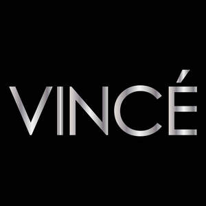
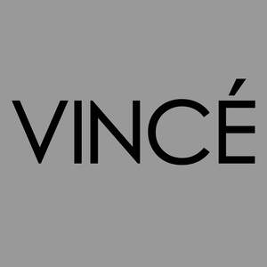
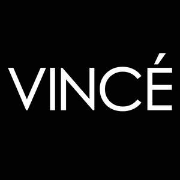
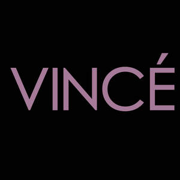
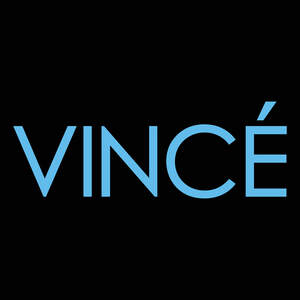
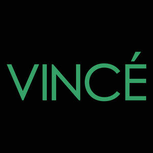

Trade Mark Journal No.2025/043 24 October 2025
UK00004274531 7 October 2025 (3)
Mark 1

Mark 2

Mark 3

Mark 4

Mark 5

Mark 6

- Class 3
- Cosmetics; Skincare cosmetics; Moisturisers [cosmetics]; Cosmetics and cosmetic preparations; Hair cosmetics; Skin fresheners [cosmetics]; Cosmetics for suntanning; Cosmetics for eye-lashes; Anti-aging moisturizers used as cosmetics; Organic cosmetics; Lip cosmetics; Nail cosmetics; Non-medicated cosmetics; Skin moisturizers used as cosmetics; Mousses [cosmetics]; Natural cosmetics; Cosmetics preparations; Make-up palettes containing cosmetics; Tanning gels [cosmetics]; Cosmetics in the form of lotions; Tanning oils [cosmetics]; Facial creams [cosmetics]; Colour cosmetics; Beauty care cosmetics; Self-tanning preparations [cosmetics]; Cosmetics for animals; Suncare lotions [for cosmetic use]; Eyebrow cosmetics; Tanning preparations [cosmetics]; Decorative cosmetics; Multifunctional cosmetics; Milks [cosmetics]; Eye cosmetics; Body creams [cosmetics]; After-sun oils [cosmetics]; Skin masks [cosmetics]; Tanning milks [cosmetics]; Cosmetics for eye-brows; Functional cosmetics; Facial gels [cosmetics]; Suntan oils [cosmetics]; Skin care cosmetics; Fluid creams [cosmetics]; Suntan lotion [cosmetics]; Cosmetics for children; Non-medicated cosmetics and toiletry preparations; Humectant preparations [cosmetics]; Emollient preparations [cosmetics]; Cosmetics in the form of creams; Powder compacts [cosmetics]; Sun-tanning preparations [cosmetics]; Cosmetic hair lotions; Colour cosmetics for the skin; After-sun milks [cosmetics]; Suntanning oil [cosmetics]; After-sun milk [cosmetics]; Cosmetics for use on the skin; Cosmetic moisturisers; Bath powder [cosmetics]; Sunscreens [for cosmetic use]; Cosmetic creams and lotions; Skin recovery creams [cosmetics]; Night creams [cosmetics]; Body gels [cosmetics]; Cosmetics for the use on the hair; Cosmetic products in the form of aerosols for skincare; Sun blocking lipsticks [cosmetics]; Body and facial creams [cosmetics]; Sunscreen [for cosmetic use]; Lip stains [cosmetics]; Body care cosmetics; Creams (Cosmetic -); Cosmetic creams; Sunscreen creams [for cosmetic use]; Cosmetic soaps; Cosmetics containing keratin; Cosmetics in the form of powders; Hair care lotions [for cosmetic use]; Cosmetic skin fresheners; Dyes (Cosmetic -); Cosmetic dyes; Cosmetics in the form of oils; After-sun lotions [for cosmetic use]; Cosmetics containing panthenol; Beauty lotions; Cosmetic facial lotions; Facial lotions [cosmetic]; Nail paint [cosmetics]; Cosmetic suntan lotions; Nail hardeners [cosmetics]; Colour cosmetics for children; Skin care lotions [cosmetic]; Perfume oils for the manufacture of cosmetic preparations; Tissues impregnated with cosmetics; Nail tips [cosmetics]; Anti-aging creams [for cosmetic use]; Sun protecting creams [cosmetics]; Cosmetic products for the shower; Anti-ageing creams [for cosmetic use]; Smoothing emulsions [cosmetics]; Nail primer [cosmetics]; Skin cleansers [cosmetic]; Perfumed powders [for cosmetic use]; Liners [cosmetics] for the eyes; Moisturising skin lotions [cosmetic]; Cosmetic creams for the skin; Skin creams [for cosmetic use]; Skin creams [cosmetic]; Body and facial gels [cosmetics]; Shampoo; Hair shampoo; Dandruff shampoo; Shampoos; Hair shampoos; Waterless shampoo; Baby shampoo; Baby shampoo mousse; Carpet shampoo; Shampoo bars; Non-medicated hair shampoos; Shampoo for animals; Dry shampoos; Emollient shampoos; Hair lotion; Waterless shampoos; Shampoos for human hair; Car shampoos; Non-medicated shampoos; Hair conditioner; Pet shampoos; Hair moisturising conditioners; Baby hair conditioner; Hair lotions; Hair moisturizers; Hair moisturisers; Body shampoos; Hair conditioner bars; Shampoos for babies; Deodorant soap; Soap (Deodorant -); Non-medicated pet shampoos; Hair rinses; Vehicle shampoos; Hair gel; Hair rinses [shampoo-conditioners]; Pets (Shampoos for -); Shampoos for pets; Hair rinses [for cosmetic use]; Hair conditioners; Hair styling lotions; Hair balm; Non-medicated hair lotions; Colouring lotions for the hair; Hair spray; Hair gels; Hair sprays; Mousses [toiletries] for use in styling the hair; Shower soap; Hair emollients; Creams (Soap -) for use in washing; Non-medicated balm for hair; Refill packs for shampoo dispensers; Hair bleach; Hair balms; Aloe soap; Hair pomades; Hair styling gel; Hair serums; Oils for hair conditioning; Bath lotion; Shaving lotion; Shaving soap; Hair care lotions; Hair balsam; Conditioners for treating the hair; Shampoos for vehicles; Hair tonic [non-medicated]; Detergent soap; Hair mascara; Hair mousse; Hair tonic; Hair tonic [for cosmetic use]; Hair styling gels; Styling gels for the hair; Hair texturizers; Hair oils; Styling sprays for the hair; Hair creams; Hair styling spray; Hair conditioners for babies; Hair tonics; Antiperspirant soap; Soap (Antiperspirant -); Hair strengthening treatment lotions; Shampoos for pets [non-medicated grooming preparations]; Shaving soaps; Shower and bath gel; Bath and shower gel; Hair relaxers; Shaving lotions; Aftershave lotions; Aloe soaps; Bath soap; Dandruff shampoos, not for medical purposes; Hair tonics [for cosmetic use]; Conditioners in the form of sprays for the scalp; Hair-washing powder; After-shave gel; Hair bleaches; Hair cream; Roll-on deodorants [toiletries]; After-shave lotions; Shower gel; Depilatory lotions; Toothpaste; Bath and shower oils [non-medicated]; Gels for fixing hair; Soap products; Conditioners for use on the hair; Hairstyling serums; Beauty serums; Non-medicated skin serums; Anti-ageing serum; Beauty serums with anti-ageing properties; Hair care serums; Anti-ageing serums for cosmetic purposes; Anti-aging moisturizers; Moisturizers; Serums for cosmetic purposes; Anti-aging creams; Moisturisers; Anti-ageing creams; Anti-aging serum for cosmetic use; Moisturising creams, lotions and gels; Skin moisturizers; Anti-wrinkle creams; Skin moisturizer masks; Moisturizing creams; Anti-aging skincare preparations; Anti-ageing moisturiser; Skin moisturisers; Skin hydrators; Facial moisturizers; Moisturising creams; Skin hydrators being injectable dermal fillers; Moisturising skin creams [cosmetic]; Creams for firming the skin; Anti-wrinkle creams [for cosmetic use]; Skin lotions; Lotions for the skin; Skin moisturizer; Facial moisturisers [cosmetic]; Skin creams; Creams for the skin; Hair care serum; Skin whitening creams; Creams (Skin whitening -); Hydrating masks; Exfoliating creams; Cosmetic nourishing creams; Skin cleansers; Suncare lotions; Moisturizing body lotions; Skin calming serum; Hydrating creams for cosmetic use; Exfoliant creams; Facial serum for cosmetic use; Moisturising gels [cosmetic]; Skin moisturiser; Dermatological creams [other than medicated]; Facial lotions; Non-medicated skin lotions; After-sun creams; Skin creams [non-medicated]; Non-medicated skin creams; Pre-shave creams; After-sun lotions; Sun-tanning creams and lotions; Non-medicated moisturisers; Moisturizing preparations for the skin; Skin cleansers [non-medicated]; Skin relief serum [cosmetic]; Skin hydrators for cosmetic purposes; Facial creams; Moisturiser; Skin balms [cosmetic]; Creams for tanning the skin; Anti-aging cream; Beauty balm creams; Cleansing lotions; Skin conditioners; Non-medicated skin clarifying lotions; Scented body lotions and creams; Skin balms (Non-medicated -); Non-medicated skin balms; Skin tonics [non-medicated]; Cleansing creams; Suntan creams [self-tanning creams]; Hair care creams; Aromatherapy creams; Skincare preparations; Skin care creams [cosmetic]; Cosmetic creams for skin care; Cleansing creams [cosmetic]; Skin emollients; Facial cleansers; Cosmetic creams for firming skin around eyes; Body firming creams; Hair care creams [for cosmetic use]; Facial scrubs; Body scrubs; Exfoliating scrubs for the hands; Foot scrubs; Exfoliating scrubs for the body; Exfoliating scrubs for the face; Exfoliating scrubs for the feet; Hand scrubs; Cosmetic body scrubs; Body scrubs [cosmetic]; Face scrubs (Non-medicated -); Facial scrubs [cosmetic]; Exfoliating scrubs for cosmetic purposes; Exfoliating body scrub; Body scrub; Gel scrub; Face scrub; Loofah soaps; Lotions for beards; Facial soaps; Cosmetic mud masks; Exfoliants; Exfoliants for the care of the skin; Scented body lotions; Massage oils and lotions; Bathing lotions; Cloths impregnated with a skin cleanser; Body mask lotion; Scented body creams; Foot masks for skin care; Milky lotions for skin care; Facial washes [cosmetic]; Exfoliants for the cleansing of the skin; Perfumed oils for skin care; Lotions for face and body care; Facial wipes impregnated with cosmetics; Facial washes; Aromatherapy lotions; Skin masks; Soaps for body care; Facial lotion; Scented soaps; Hand masks for skin care; Cosmetic facial masks; Facial masks [cosmetic]; Baby lotions; Facial cleansers [cosmetic]; Hair care masks; Moist wipes impregnated with a cosmetic lotion; Make-up removing lotions; Scented bathing salts; Tissues impregnated with cosmetic lotions; Lotions (Tissues impregnated with cosmetic -); Facial masks; Wipes impregnated with a skin cleanser; Non medicated skin toners; Skin toners; Skin toners [cosmetic]; Skin toner; Toners for cosmetic use; Facial toners [cosmetic]; Facial toner; Toners for cosmetic purposes; Toning creams [cosmetic]; Aftershave moisturising cream; Moisturising body lotion [cosmetic]; Skin lotion; Skin cleansing lotion; Body moisturisers; Mattifying gel cream; Oils for moisturising the skin after sunbathing; After sun moisturisers; Sunscreen creams; Aftershave balm; Aftershave creams; Skin cleansing cream; Skin cleansing cream [non-medicated]; Sunscreen lotions; Moisturizing milk; Blemish balm creams; Sunscreen cream; After-shave creams; Aftershave balms; Skin cream; Skin emollients [non-medicated]; Moisturising concentrates [cosmetic]; Day lotion; Sun-block lotions; Cosmetic creams for dry skin; Anti-wrinkle cream; Moisturising preparations; Cream for whitening the skin; Whitening the skin (Cream for -); Sun tan lotion; Tissues impregnated with a skin cleanser; Facial concealer; After-shave balms; Skin cream [for cosmetic use]; Skin make-up; After-sun milk; After-sun milks; Anti-wrinkle cream [for cosmetic use]; Shaving balm; Non-medicated cleansing creams; Skin soap; Face wash; Face wash [cosmetic]; Face wipes; Facial wash; Face paint; Body wash; Liquid soaps for hands and face; Make-up for the face; Cleaning masks for the face; Face creams; Hair and body wash; Toning lotion, for the face, body and hands; Face powder; Face paints; Face and body creams; Face masks; Make-up for the face and body; Face and body masks; Face oils; Face gels; Face and body lotions; Face and body glitter; Face glitter; Face blusher; Face powders; Pressed face powder; Loose face powder; Hand washes; Face packs; Face cream (Non-medicated -); Mouth washes; Face dusting powders; Face powder (Non-medicated -); Face powder [for cosmetic use]; Creamy face powder; Make-up preparations for the face and body; Face creams for cosmetic use; Disposable wipes impregnated with cleansing compounds for use on the face; Cosmetic white face powder; Body washes; Face packs [cosmetic]; Rinsing aids for use when washing clothes; Face powders [for cosmetic use]; Cosmetic face powders; Face lifting stickers for cosmetic use; Cakes of soap for body washing; Non-medicated mouth washes; Cosmetic paste for application to the face to counteract glare; Soap free washing emulsions for the body; Washing creams; Beauty masks for hands; Washing powder; Non-medicated mouth rinse; Hand cleansers; Body mask cream; Windshield washing fluid; Hand soap; Sun-tanning lotions; Non-medicated lotions; Bath lotions (Non-medicated -); Body lotions; Hand lotions; Cosmetic sun milk lotions; Styling lotions; Pre-shaving lotions; Self tanning lotions [cosmetic]; Eye lotions; Non-medicated stimulating lotions for the skin; Suntan creams; Non-medicated foot lotions; Sun care lotions [for cosmetic use]; Hair protection lotions; Perfumed body lotions [toilet preparations]; Perfumed lotions [toilet preparations]; Tanning creams; Sun care lotions; Perfumed creams; Bath creams (Non-medicated -); Sun-tanning creams; Cosmetic massage creams; Bath creams; Lotions for cosmetic purposes; Shower creams; Soaps and gels; Creams (Non-medicated -) for the body; Wave-set lotions; Hand lotion (Non-medicated -); Lotions for strengthening the nails; Non-medicated creams; Dyes for the hair; Hair dyes; Hair colouring and dyes; Beard dyes; Hair colorants; Hair dye; Henna [cosmetic dye]; Eyelash dye; Hair colourants; Laundry preparations for attracting dyes; Hair dyeing preparations; Shaving cream; Facial cream; Lip cream; Bath cream; Cream soaps; Cuticle cream; Cold cream; Shower cream; Eye cream; Cleansing cream; Shoe cream; Hand cream; Base cream; Camouflage cream; Nail cream; Body cream; Cream foundation; Day cream; Boot cream; Night cream; Facial cream [for cosmetic use]; Body cream soap; Nappy cream [non-medicated]; Wrinkle resistant cream; Cream cleaners (Non-medicated -); Shaving creams; Hair removing cream; Retinol cream for cosmetic purposes; Sun block [cosmetics]; Sun block preparations; SPF sun block sprays; Patches containing sun screen and sun block for use on the skin; Sun creams; Cosmetic patches containing sunscreen and sun block for use on the skin; Sun screen; After sun creams; Sun blocking oils [cosmetics]; Sun tan oil; Sun bronzers; Sun tan milk; Sun blocking preparations [cosmetics]; Sun tan gel; Sun protection preparations; Sun screen preparations; Sun barriers [cosmetics]; Compounds for skin care after exposure to the suns rays; Sun creams [for cosmetic use]; Cosmetic sun oils; Sun protectors for lips; Preparations for protecting the hair from the sun; Alum blocks for shaving; Sun care preparations; Eye shadow; Eye make-up; Eye shadows; Eye makeup; Eye creams; Eye liner; Eye concealers; Eye pencils; Eye gel; Eye sticks; Eye gels; Eye stylers; Eye make-up removers; Cosmetic eye pencils; Eye correction serum; Under eye correctors; Eye makeup remover; Eye brightening correctors; Cosmetics in the form of eye shadow; Eye wrinkle lotions; Cosmetic preparations for eye lashes; Cosmetic eye gels; Eye make up remover; Gel eye masks; Skin, eye and nail care preparations; Eyes make-up; Eye compresses for cosmetic purposes; Eyes pencils; Colour cosmetics for the eyes; Eyelid shadow; Gel eye patches for cosmetic purposes; Eye care products, non-medicated; Fragrance sachets for eye pillows; Creams (Non-medicated -) for the eyes; Eyelid pencils; Wiping cloth impregnated with a cleaning preparation for cleaning eye glasses; Eyelid doubling makeup; Cleansing products for the eyes; Eyebrow mascara; Eyelash tint; Eyebrow colors; Hair care preparations; Hair care agents; Cosmetic hair care preparations; Oil baths for hair care; Skin care mousse; Beard care preparations; Hair care preparations, not for medical purposes; Skin care preparations; Skin care oils [cosmetic]; Facial care preparations; Skin care creams, other than for medical use; Essences for skin care; Skin care oils [non-medicated]; Beauty creams for body care; Skin care (Cosmetic preparations for -); Cosmetic preparations for skin care; Skin care products for animals; Wax treatments for the hair; Cleansing milks for skin care; Body cleaning and beauty care preparations; Cosmetic preparations for the hair and scalp; Horse oil cream for skin care; Hair treatment preparations; Hair nourishers; Beauty preparations for the hair; Hair grooming preparations; Non-medicated skin care preparations; Beauty care preparations; Nail care preparations; Hair permanent treatments; Deodorants for body care; Hair styling waxes; Foot care preparations (Non-medicated -); Non-medicated foot soaks; Lip care preparations; Preparations for the care of the body; Non-medicated foot cream; Foot balms (Non-medicated -); Tooth care preparations; Cosmetic nail care preparations; Dental care preparations for animals; Non-medicated body care preparations; Foot powder [non-medicated]; Non-medicated face care preparations; Makeup; Make-up; Facial makeup; Lip makeup; Nail makeup; Theatrical makeup; Make-up remover; Natural makeup; Make-up primer; Organic makeup; Make-up removers; Make-up primers; Powder for make-up; Make-up powder; Powder (Make-up -); Multifunctional makeup; Make-up pencils; Foundation make-up; Make-up foundation; Make-up for compacts; Make-up foundations; Chalk for make-up; Make-up kits; Make-up base; Make-up preparations; Make-up removing creams; Makeup setting sprays; Make-up removing gels; Make-up removing preparations; Hairstyling masks; Make-up removing milks; Make-up removing milk; Eyeliner; Compacts containing make-up; Mascara; Eye-shadow; Fake blood being theatrical make-up; Eyeshadow; Facial beauty masks; Lipstick; Cosmetic hair dressing preparations; Eyeshadow palettes; Nail polish removers [cosmetics]; Facial creams [cosmetic]; Facial creams [for cosmetic use]; Nail varnish remover [cosmetics]; Baby wipes; Baby lotion; Baby powder; Baby oils; Baby oil; Baby suncreams; Baby powders; Baby body milks; Baby bath mousse; Baby bubble bath; Baby bottom balm; Baby care products (Non-medicated -); Baby wipes impregnated with cleaning preparations; Hair oil; Hair fixing oil; Beard oil; Facial oil; Shaving oil; Cuticle oil; Combing oil; Hair wax; Hair liquids; Japanese hair fixing oil (bintsuke-abura); Hair liquid; Body oil; Body oil spray; Massage oil; Bath oil; Hair lacquer; Hair lighteners; Body oil [for cosmetic use]; Hair powder; Hair masks; Cleansing oil; Oils for the skin; Lavender oil for cosmetic use; Shaving oils; Rosemary oil for cosmetic use; Jasmine oil; Hair lacquers; Hair glazes; Hair color.
MABLAY BEAUTY (PRIVATE) LIMITED
Representative: Huzefa Saifee